7. MIT 해커 문화와 ITS
MIT 해커 문화는 테크 모델 철도 클럽에 뿌리를 두고 있다. 이 동아리는 움직이는 모형 기차를 만들고, 기차끼리 충돌하지 않도록 릴레이 제어 시스템을 연구했다[1].
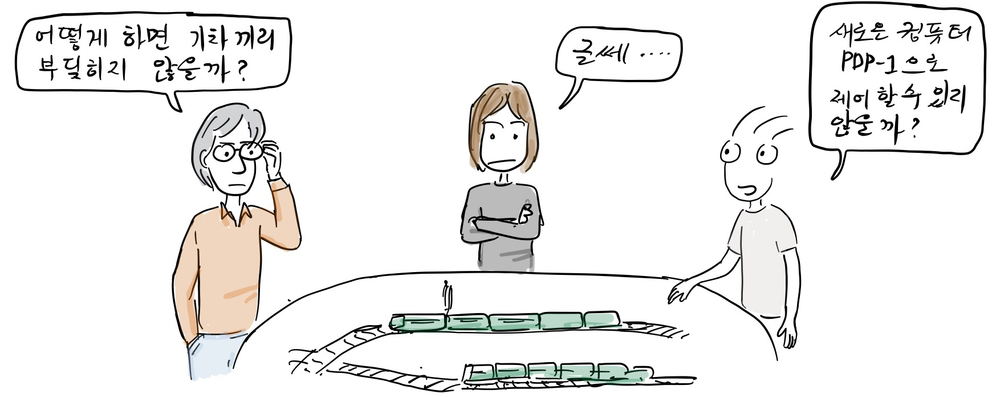
“어떻게 하면 기차끼리 부딪히지 않을까?”
“글쎄 ....”
“새로운 컴퓨터 PDP-1으로 제어할 수 있지 않을까?”
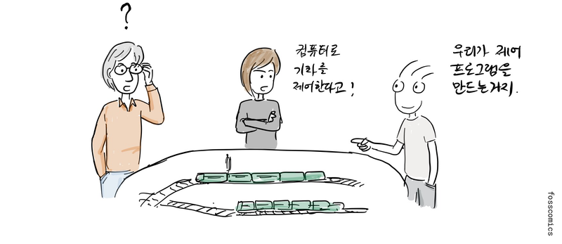
“컴퓨터로 기차를 제어한다고?”
“우리가 제어 프로그램을 만드는거지.”
참고로, 아래 동영상을 보면 움직이는 모형 기차를 제어하는 일이 얼마나 복잡했는지 알 수 있다.
DEC에서 만든 PDP 시리즈은 해커 문화에 큰 기여를 했고, 후속 기종은 자유 소프트웨어 탄생의 중요한 환경을 제공했다. 이 컴퓨터들은 비교적 저렴한 가격으로 판매되어 특히 대학에서 인기가 많았고 미니컴퓨터라는 분야를 확립하는 데 기여했다. 참고로, DEC는 1961년 PDP-1을 MIT에 기증했다[2].
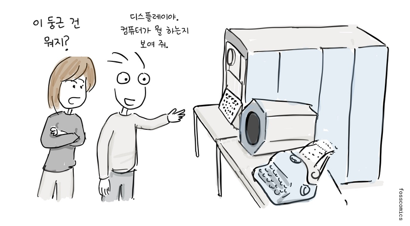
“이 둥근 건 뭐지?”
“디스플레이야. 컴퓨터가 뭘 하는지 보여 줘.”
그 후, 테크 모델 철도 클럽 회원들은 TX-0와 이후 PDP-1에 더 많은 시간을 보내게 된다.
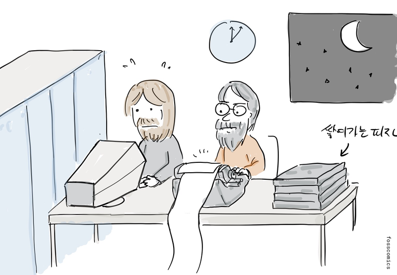
“전기 요금이 왜 이렇게 많이 나왔지?”
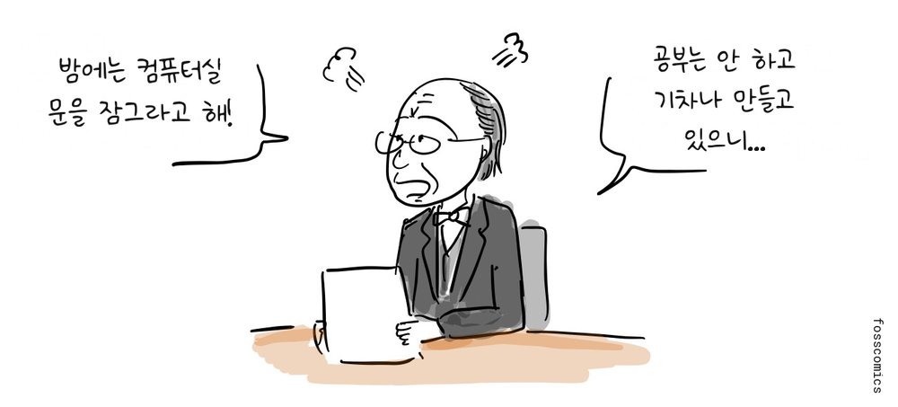
“밤에는 컴퓨터실 문을 잠그라고 해!”
“공부는 안 하고 기차나 만들 것이지...”
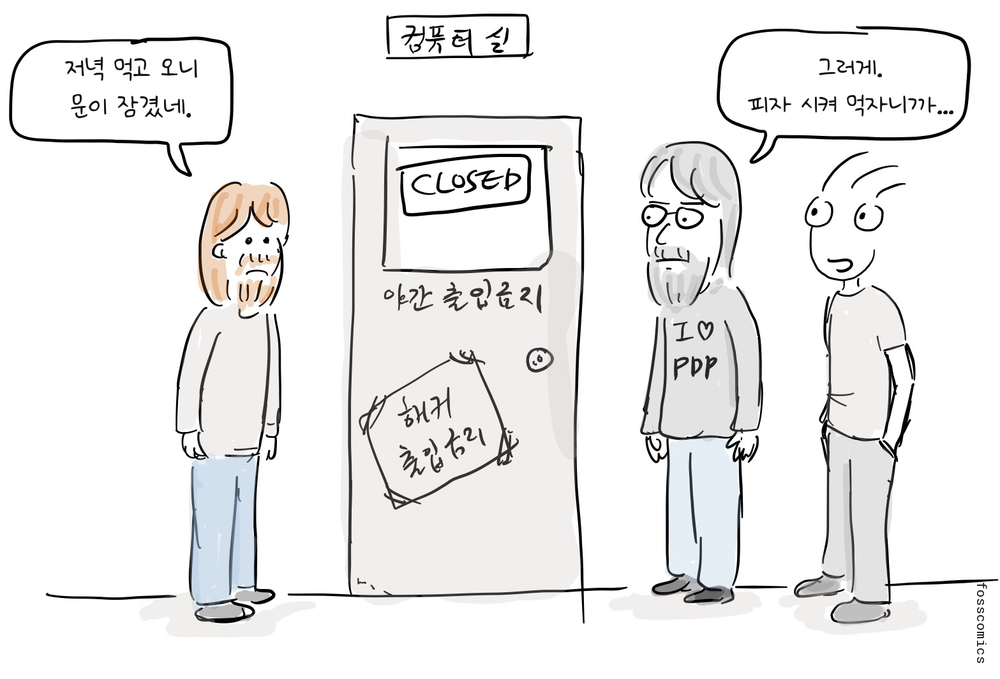
“저녁 먹고 오니 문이 잠겼네.”
“그러게. 피자 시켜 먹자니까...”
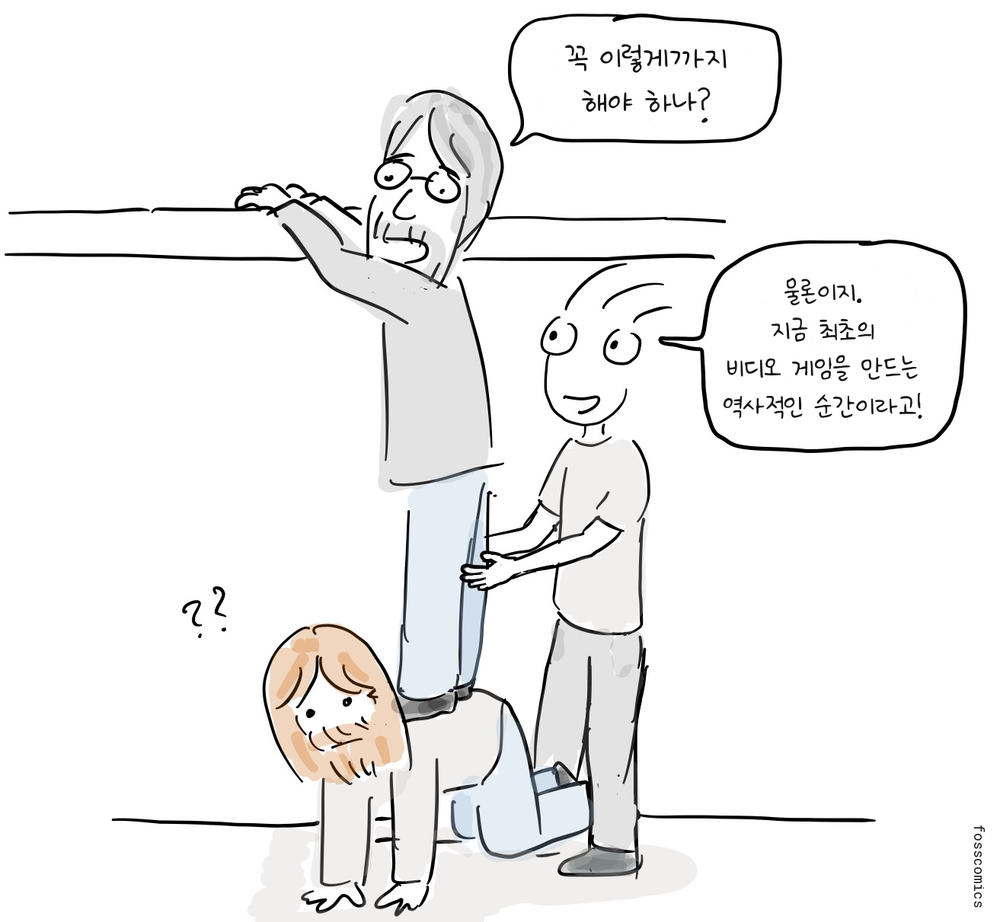
“꼭 이렇게까지 해야 하나?”
“물론이지. 지금 우리가 최초로 비디오 게임을 만드는 역사적인 순간에 함께 있는거야!”
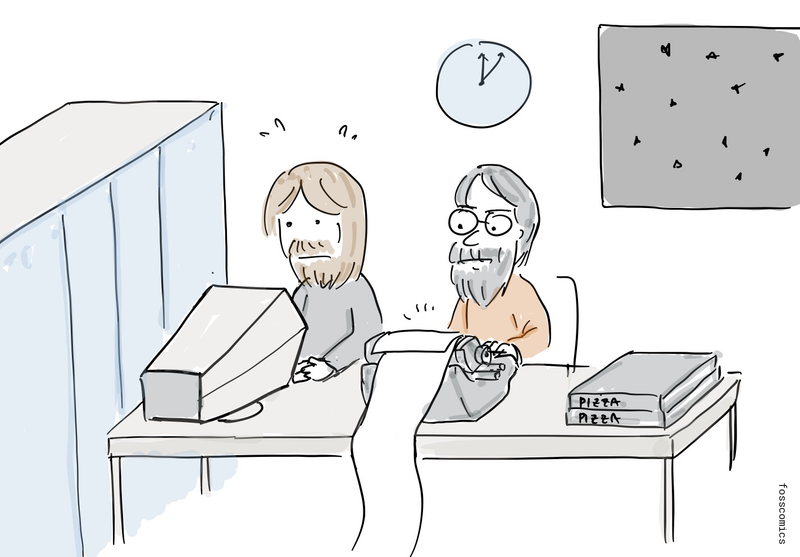
그리고 학생들은 재미를 위해 초창기의 가장 영향력 있는 컴퓨터 게임 가운데 하나인 Spacewar!를 만들었다[5].
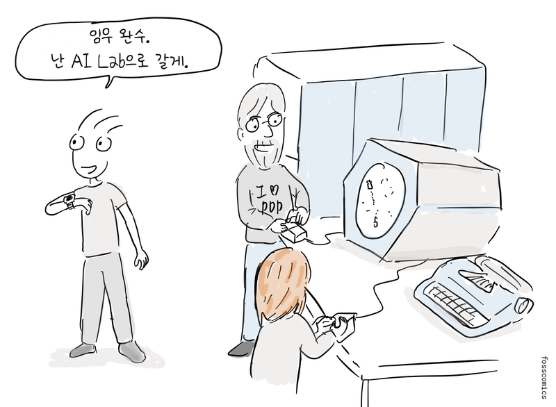
“임무 완수. 난 AI Lab으로 갈게.”
당시 MIT 프로젝트 MAC의 인공지능 그룹은 해커 문화의 중심지였는데[4], GE, 벨 연구소와 함께 Multics라는 운영체제를 개발하고 있었다. 하지만 운영체제 개발 방향에 대한 생각이 달랐던 인공지능 그룹의 프로그래머들은 1967년부터 자신들의 운영체제인 ITS(Incompatible Timesharing System)를 개발하기 시작했다. 인공지능 그룹은 1970년 프로젝트 MAC에서 분리되어 정식 연구소가 되었다.
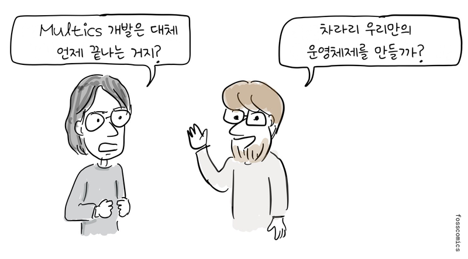
“Multics 개발은 대체 언제 끝나는 거지?”
“차라리 우리만의 운영체제를 만들까?”
MIT 해커 톰 나이트는 최초의 ITS 커널을 개발했습니다.
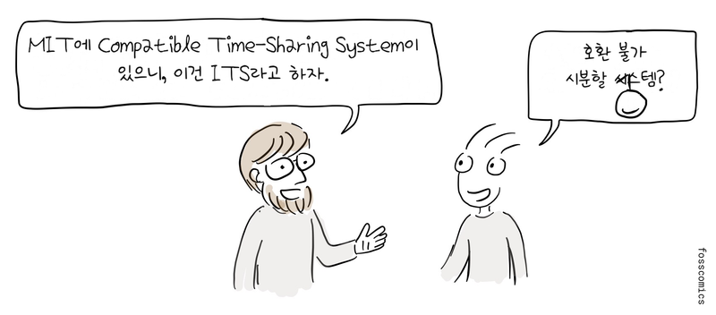
“MIT에 Compatible Time-Sharing System이 있으니, 이건 ITS라고 하자.”
“호환 불가 시분할 시스템?”
ITS 개발은 PDP-6에서 시작됐고 시스템은 어셈블리어로 작성됐습니다.
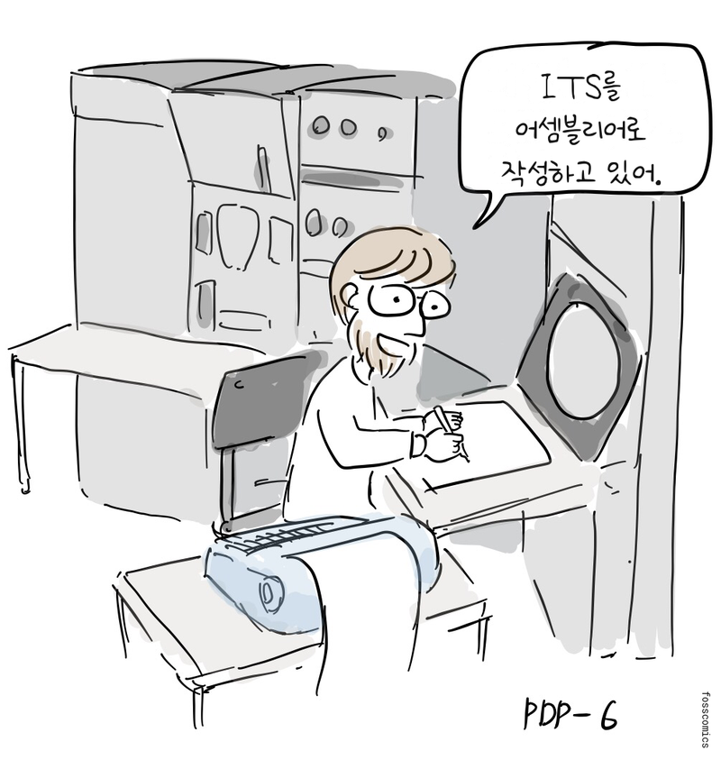
“ITS를 어셈블리어로 작성하고 있어.”
당시 ITS 운영체제는 오늘날에는 찾아보기 힘든 독특한 사용자 환경을 제공했다. 초기에는 로그인하지 않고도 시스템을 사용할 수 있었고, 사용자가 자신의 이름을 밝혀도 암호가 필요하지 않았다. 문서와 소스 코드를 포함한 모든 파일도 누구나 편집할 수 있었다.
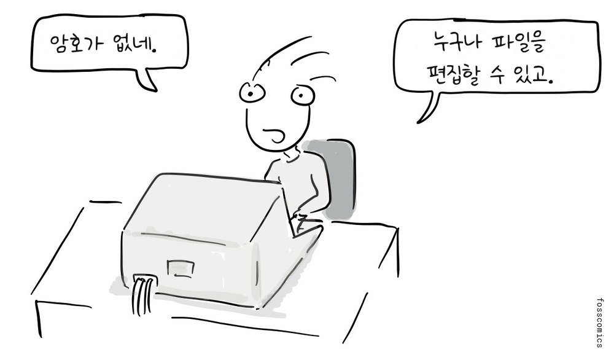
“암호가 없네.”
“누구나 파일을 편집할 수 있고.”
또한, MIT 내부뿐만 아니라 다른 기관이나 학교에서도 ARPANET을 통해 ITS에 접속할 수 있었다. 이러한 ITS의 열린 철학과 협력적인 공동체 환경은 해커 문화와 자유·오픈 소스 소프트웨어 운동에 큰 영향을 끼쳤으며, 훗날 위키로 구현된 개방형 협업 지식 공유 모델을 앞서 보여 주었다[3].
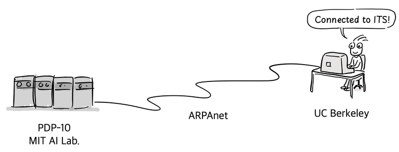
훗날 자유 소프트웨어 운동을 시작한 리처드 스톨먼도 1971년부터 MIT AI Lab에서 일하면서 공동체의 일원으로 ITS 운영체제 개발에 참여했고, 여기서 해커 문화의 영향을 받는다.

당시 많은 기관에서는 소프트웨어를 하드웨어의 일부로 취급해 별도의 비용 없이 공유하고 사용했다. 일부 기업도 소스 코드와 함께 소프트웨어를 배포해 사용자가 수정하고 복사할 수 있도록 했다. 하지만 이런 관행이 어디서나 통용된 것은 아니었고, 상용 소프트웨어도 이미 존재했다.
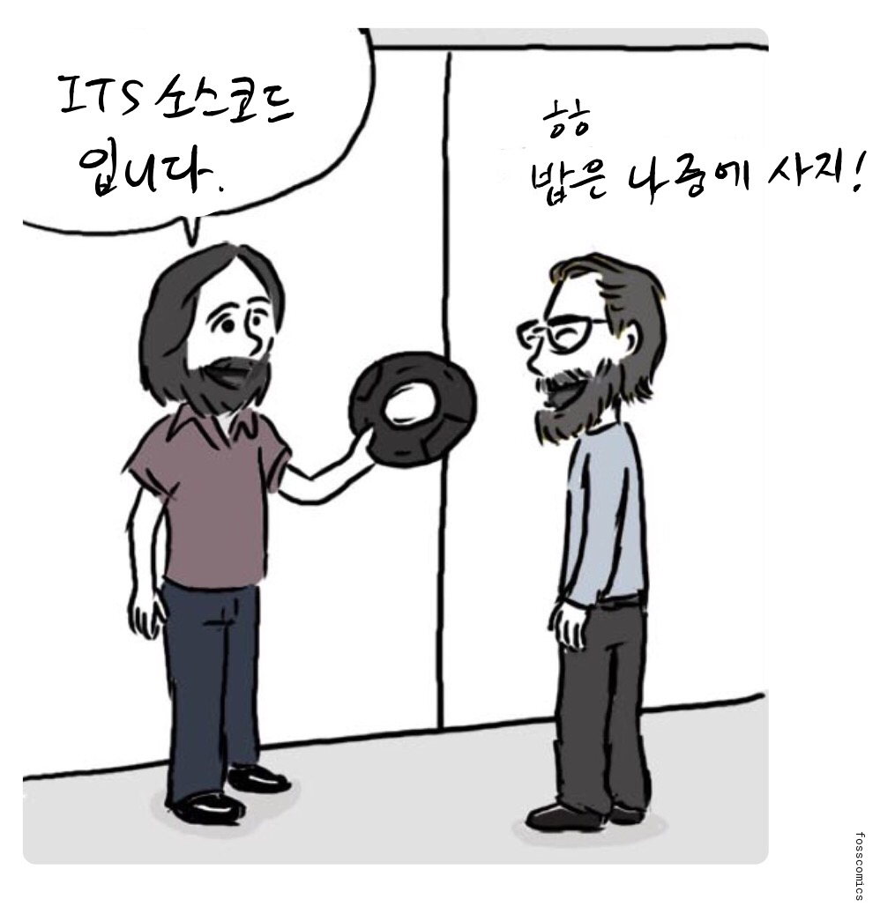
“ITS 소스코드 입니다.”
“ㅎㅎ 밥은 나중에 사지!”
참고 자료
- 해커, 위키백과
- PDP-1, 위키백과
- 비호환 시분할 시스템(ITS), 위키백과
- 프로젝트 MAC, 위키백과
- 스페이스워!, 미국 컴퓨터 역사 박물관